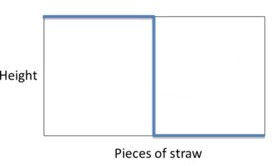

Tipping points

- Tipping points are nonlinear models where a small change is leading to a big effect.
The straw that broke the Camel’s back is utterly ridiculous example. Here is perhaps a few better ones:
- As the human body gains in muscle and loses fat it reaches a point where it can no longer float in water, at this point a swimmer must forever be treading water or swimming to keep afloat. The tipping point can also be viewed as drop survivability time for people in the sea.
- The volume of an explosive reaches a tipping point when it is detonated.
- Today most bridges can withstand cross winds. However in the past some bridge were not and cross wind during a storm could force a bridge to shake at its resonant frequency which caused it to break apart.
Also here are some worse examples of tipping point
- The drop in crime rate in New York is claimed by Malcom Gladwell to be an example of a tipping point. He suggested that “Broken Windows Theory” was what tipped crime rates in 1984 which was a policy of increasing the police force and getting them to crack down hard on misdemeanors like graffiti, jay-walking and free riding in the subway. Did this pretext of harassing minorities really motivated criminals to abandon crime, stop selling drugs, or emigrate to other cities with smaller police forces ?
In Donohue III and Levitt (2001) a more convicting hypothesis for the decline of crime is presented. The economists also looked at other cities in the US that experienced similar dramatic drops in crime. What they report is that drops in crime rate took place in both rich cities that boosted trier police force and in poor cities that could not afford to. The point out that crimes follow a Pareto-distribution were 95% of all violent crime in big cities is due to a very small population of career criminals. They suggest that the drop was due to Roe Vs Wade passing about 18 years with the outcome that teen-agers and single mothers were able to avoid having children they could not support. The data required lots of massaging (murders are solved long after they are reported, there was a crack epidemic, some place had easier access to abortion etc,) And while this effect seems to occur globally in different localities after an 18 year lag this analysis has been challenged by others researchers several times. See also Legalized abortion and crime effect
A third hypothesis is that the crime levels are correlated with the use of leaded gasoline. Lead is highly toxic to the human brain.
Often when people think about tipping points, they think of kinks in curves. Sometimes a kink in a curve reflects a tipping point, but not always. In many cases these kinks are just exponential growth, because with exponential growth you have a curve that takes off at some point. A book about tipping points (Gladwell 2006), written by Malcolm Gladwell.
It is important to see what is a tip and what is not, and also what kind of models produce tips. Two famous models are the percolation model from physics and SIS model from epidemiology. Percolation refers to the question whether or not water can make its way through a certain layer, e.g. the ground or a coffee filter. SIS stands for susceptible, infected and susceptible again, which is a simple model for diseases.
There is a distinction between types of tips. There are direct tips and contextual tips. With a direct tip or active tip, a variable itself changes, which causes it to tip. e.g., a battle might tip a war. With a contextual tip something changes in the environment that makes it possible for the system to move from one state to another. e.g., the density of the trees could tip the spread of a forest fire.
A system can be stable (in equilibrium), periodic, random or complex. A system can tip from one state to another but there are also tips within classes. e.g., a system might tip from one equilibrium to another equilibrium.

Percolation models
Percolation models come from physics. The idea is that water comes down in the form of rain and the question is does the water percolate through the soil or not? To make a model, you can simplify the situation by using a checkerboard. The idea is that water can only percolate from one filled box to another, including diagonal directions. In the example, the water can’t make it to the bottom.
The model is as follows. Assume that the graph is big. Let p be the probability that a box gets filled. Then we ask the question: does it percolate? As long as p is less than 59.2%, it doesn’t percolate. Above this value, the system tips, and then it suddenly becomes likely that it does percolate.
What is causing the tip? For p less than 59.2%, there just aren’t enough boxes filled in. However, when the values passes 59.2%, it suddenly becomes more likely that the water percolates to the bottom.
This model can be applied to all kinds of things, for instance forest fires. In this case, you can use the checkerboard to represent trees, and the filled in boxes represent the density of the forest. e.g., you set the forest density to 57% and set fire to all trees on the left side in the model.
As you can see, the fire doesn’t make it to the other side, even after repeated attempts. If you push up forest density to 61%, nearly all attempts will show that the forest fire makes it to the other side. This is an example of the fertility of models. A model that was used to explain percolation, can also be used for forest fires.
Curiously, the 59.2% threshold is also a tipping point in the yield curve of a forest. If you plant more trees, the yield of the forest in terms of wood produced rises in a linear fashion, until the tipping point, after which the yield will fall.
You can also apply this to banks. You can have a checkerboard of banks. If one bank fails then all banks that have loaned a lot of money to this bank may also fail. In this way bank failures can cascade.
The IMF has constructed models of banks that are more sophisticated. This model uses sophisticated accounting equations where banks have assets, capital, liabilities, and loans that are failing. You can then stress the system by having banks fail and see how far the failures spread.
This model is also based on the idea of percolation. In this model you can also ask the question whether there is a tipping point, where suddenly there are many bank failures? You could do the same with country failures.
You can also apply this on information percolating. Information spreads through networks of people. Assume that there is a probability that people will tell a piece of information to their friends, then you could ask what’s the likelihood that the information percolates as a function of this probability. The model would tell that if the piece of information, e.g. a gossip, is juicy enough, then it’s likely to spread.
Intuitively, you might think that there might be a linear relationship between the value of information and the number of people hearing of it, but if you use a network model with a probability of people telling the information across links, then nothing happens if the information is not very valuable, but once the value gets above some critical threshold, you might see a tipping point, and almost everybody will hear about it.
This can also be applied to innovations. e.g., people may have been working on some technology for years or decades, and then suddenly a lot of people figure it out at approximately the same time. e.g., for a long time nobody made a steam engine, and suddenly many people were building steam engines. We see often bursts of scientific activity in a particular area, e.g. biotechnology where many people work on the same innovation at the same time.
Why does the percolation model apply here? Often finding a solution for a particular type of problem, e.g. producing a car or getting a mathematical proof, requires getting from A to B. There are many parts that have to work together, and you need a significant number of partial solutions to get through the whole problem. For instance, for a car you need wheels, brakes, an engine and a steering wheel.
As information accumulates, we can fill in more squares, and eventually someone can find a path from A to B. Suddenly there are multiple paths so that others can find other paths from A to B. It is therefore plausible that the percolation model explains those bursts in scientific activity.
Contagion models 1: Diffusion
In a diffusion model everybody receives something, which could be information or a disease. The diffusion model works as follows:
- Suppose that there is some new disease called Wobblies,
- W_t - is the number of people who got the Wobblies at time t.
- N is the total population.
- N - W_t is therfore the number of healthy.
- τ - is the transmission rate or the likelihood that someone sick infects someone healthy.
So, if two people meet, then what is the likelihood that one person gives it to the other? \tau \times \frac{W_t}{N} \times \frac{(N-W_t )}{N} \qquad \tag{1}
You need one person who has the Wobblies and one person that doesn’t have it. So the probability is
You can also apply this to a new technology being adopted or a piece of information being spread, but in those cases people don’t have to meet physically.
The spreading also depends on the contact rate c, which is how often people meet, then cN is the number of meetings. Hence,
W_{t+1} = W_t + c\times N \times τ \times \frac{W_t}{N}\frac{(N-W_t )}{N} \qquad \tag{2}
The formula says that the spread will start slow because only a few people are affected, then speed up where more people are affected, and then, when most people are affected, slows down again because there are fewer people that can be affected. The model has no tipping point.
Contagion models 2: SIS model
\begin{aligned} {\frac {dS}{dt}}&=-{\frac {\beta SI}{N}}+\gamma I\\[6pt]{\frac {dI}{dt}}&={\frac {\beta SI}{N}}-\gamma I \end{aligned} \qquad \tag{3}
The SIS model is much like the diffusion model but there is a difference. After people have been infected, they can recover and move back to the susceptible state. Hence,
W_{t+1} = W_t + c\times N \times τ \times \frac{W_t}{N}\frac{(N-W_t )}{N} - a \times W_t \qquad \tag{4}
where:
- a is the recovery rate.
This can be simplified to W_{t+1} = W_t (1 +(cτ\frac{(N - W_t)}{N} - a) )\qquad
This model is interesting, because if the recovery rate is higher than the transmission rate, then the disease is not going to spread. This model has a tipping point.
If W_t is very small, then \frac{N - W_t}{N} \approx 1 so W_t+1 = W_t(1 + cτ - a).
The disease is going to spread if cτ - a > 0 or cτ > a or \frac{cτ}{a} > 1.
R_0 \def \frac {cτ}{a}
is the basic reproduction number R_0.
- if R_0 > 1 then the disease will spread.
- If R_0 < 1 the disease dies off.
- The tipping point is 0.
Diseases like measles (15), mumps (5) and flu (3) have R_0 > 0.
If you have had the measles or the mumps, you don’t become susceptible again, so here the SIR model applies.
This model is interesting for policy decisions on how many people need to be vaccinated. Assume V to be the proportion of people vaccinated, then the altered basic reproduction number will be r0 = R0(1 - V). So, to keep the disease from spreading, we need r_0 < 1 or R_0(1 - V) < 1 or 1 - \frac{1}{R_0} < V.
e.g., if we want to keep the measles from spreading, and measles has a R_0 = 15, then we need 1 - 1/15 = 14/15 of the people to be vaccinated.
There is also a tipping point with regard to vaccines. Below the tipping point only the people that are vaccinated are protected. Above the tipping point everyone is protected.
- Herd Immunity
-
The tipping point for a population vaccination when 1 - \frac{1}{R_0} < V
Classifying tipping points
The basic idea of a dynamical system is in the graph to the left. What does the graph say? If says that x is going to change over time. If y is positive, then x is going to change in the direction of the arrows on the left. However, if y is negative, then x is going to change in the direction of the arrows on the right. This system moves to a stable equilibrium where x = y/2.
More complicated graphs are possible. In the next graph, if x < 0.2 then it will move to 0, and if x > 0.2 then it will move to 0.5. In this case there are two stable equilibria, while and 0.2 is an unstable equilibrium or a tipping point. This is called a direct tip, where a slight change in a variable will cause the variable to move into another direction.
With a direct tip, a small change in the variable itself, can have a large effect on its end state. e.g., the assassination of Archduke Franz Ferdinand tipped the whole system so that Europe went to war. Often directs tips were destined to happen, because the environment has become supportive of such an event.
If more and more preconditions are met, then the percolation model suggests that it is going to happen anyway. e.g., in the eve of World War I, the European powers were already forming alliances and preparing for war. So, often what causes a direct tip, is a change in the context. This is a contextual tip.
You can also apply this to the second graph. If you move down the line a little bit, then the system tips, and x will always move to 0. A contextual tip means that a small change in the environment has a large effect on the end state, often because of the number of squares filled in in the percolation model has reached the tipping point.
This also applies to the SIS model where R0 = cτ - a and if R0 > 1 then the disease spreads. If we change the virulence of the disease, or the rate at which people make contact, or the rate at which people recover, then the context changes.
A system can be stable (in equilibrium), periodic, random or complex. A system can tip from one class to another but there are also tips within classes. e.g., a system might tip from one equilibrium to another equilibrium. This can be represented in a graph that depicts the movement of a variable x depending on some other variable r.

Measuring tips
When measuring tips, we try to find out whether how likely the tip was going to happen. With an active or direct tip, the variable itself can cause the system to tip. If the system is at a tipping point, it is uncertain how it will behave. Once a tip has occurred, we know for certain how the system is going to behave. One way of measuring tippiness is by reductions in uncertainty.
A measure of uncertainty can be changes in the likelihood of different outcomes that could occur. Initially, there may be a large number of possible outcomes. After the system tips, there might be an equilibrium or one possible outcome, or a number of other things could occur. We measure changes in the likelihood of different outcomes using the diversity index, which is used in social sciences, and entropy, which comes from physics and information theory.
The diversity index for i possible outcomes is
\frac{1}{\sum P_i^²}
e.g., if we have three possible outcomes A, B and C, with probabilities
P(A) = 1/2, P(B) = 1/3 and P(C) = 1/6,
then the diversity index is
1 / (1/4 + 1/9 + 1/36) = 36/14 ≈ 2.57.
For i possible outcomes, the maximum diversity is i.
e.g., if we have four possible outcomes A, B, C and D, which all have a probability of 1/4, so
P(A) = 1/4, P(B) = 1/4, P(C) = 1/4 and P(D) = 1/4, then the diversity index is
1 / ((1/4)² + (1/4)² + (1/4)² + (1/4)²) = 4.
How can we use the diversity index to measure tips?
If changes in a variable cause changes in the diversity index, this is indicative of a tip.
e.g., if initially there were three possible values, and the diversity index was 2.57, and then it flips to 1, the change in value of the diversity index is the measure of the tip.
Entropy also measures the degree of uncertainty.
The formula for entropy is:
-\sum_i P(X_i) log_2(P(X_i))
log2 is the inverse of the power of 2, so log2(2x) = x. e.g., log2(1/4) = log2(2-2) = -2. e.g., if we have four possible outcomes A, B, C and D, which all have a probability of 1/4, then the entropy is - ((1/4)log2(1/4) + (1/4)log2(1/4) + (1/4)log2(1/4) + (1/4)log2(1/4)) = 2.
Entropy tells us the number of bits of information we need to know to identify the outcome. If we have four possible outcomes A, B, C and D, which all have a probability of 1/4, you can split up the possiblities in half. It is either in A, B or in C, D. This is one bit of information. If it is in C, D then you need to know whether it is C or D. This is the second bit of information. You can always find the answer by asking two questions. Hence, the entropy is 2.
The diversity index shows the number of types. The entropy is the amount of information you need to identify the type. e.g., if you have options A and B that each have a probability of 1/2, then the diversity index is 2 and the entropy is 1. After the system tips, the diversity index goes to 1 and the entropy becomes 0, and you don’t need to ask any question to know what the state of the system is. Tips are changes in the likelihood of outcomes.
References
Note: this page is based on the following source:
- (Page 2014) MOOC, Course material & Transcripts.
- TA Notes by (Fisher 2014).
- Student notes by in (Klein Ikink 2016) and (Groh 2017).
Citation
@online{2023,
author = {},
title = {Lesson 7 - {Tipping} {Points}},
date = {2023-08-07},
url = {https://orenbochman.github.io/notes-model-thinking/posts/w07.html},
langid = {en}
}